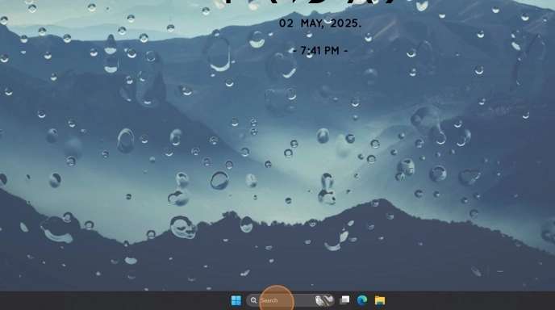
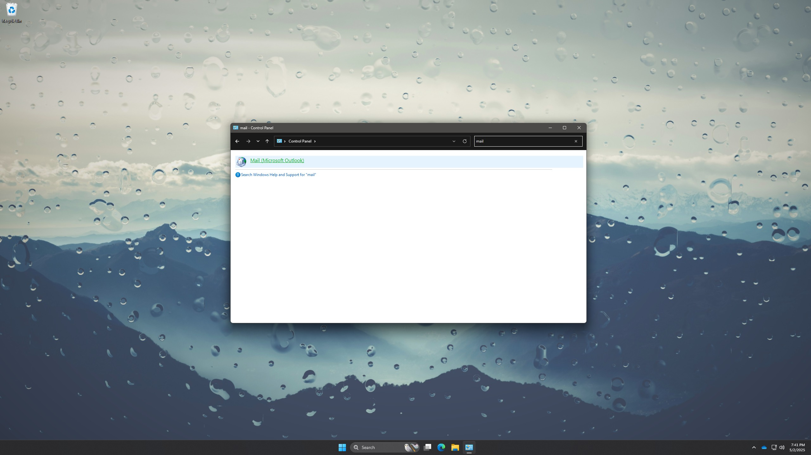
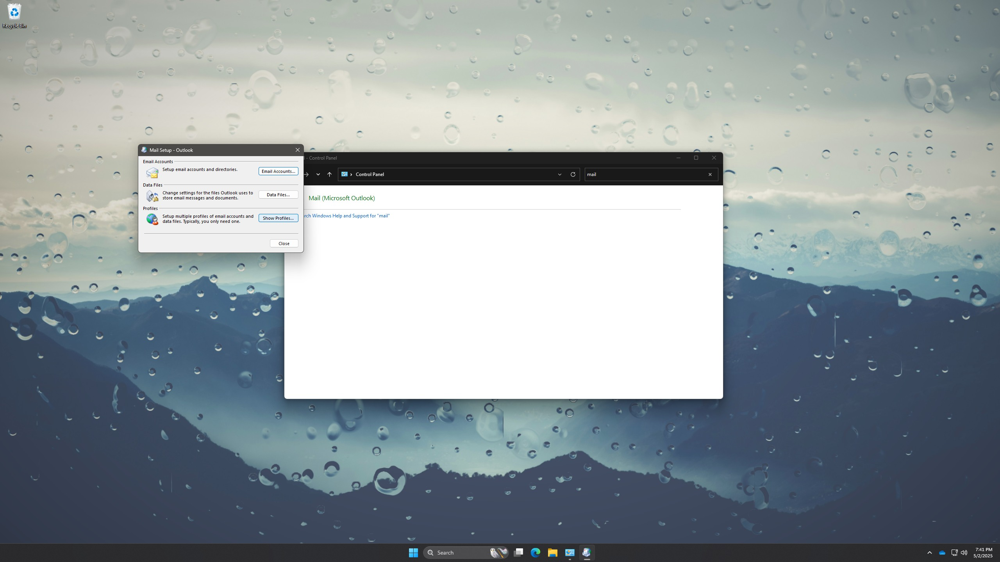
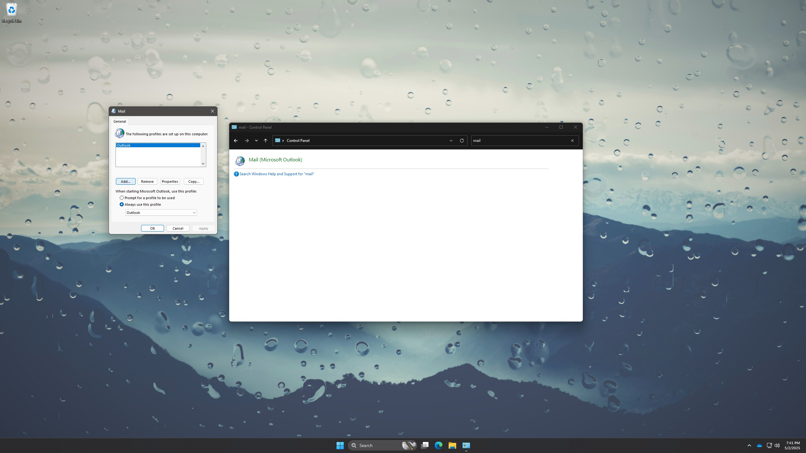
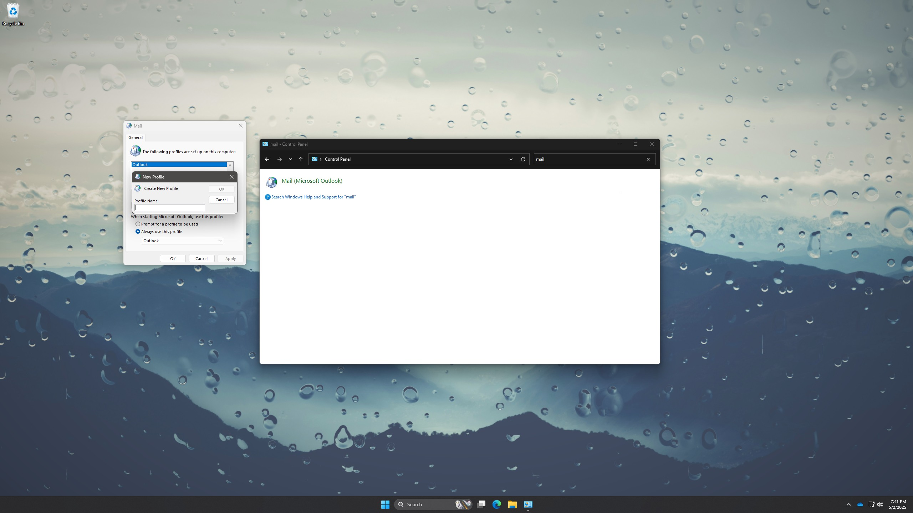
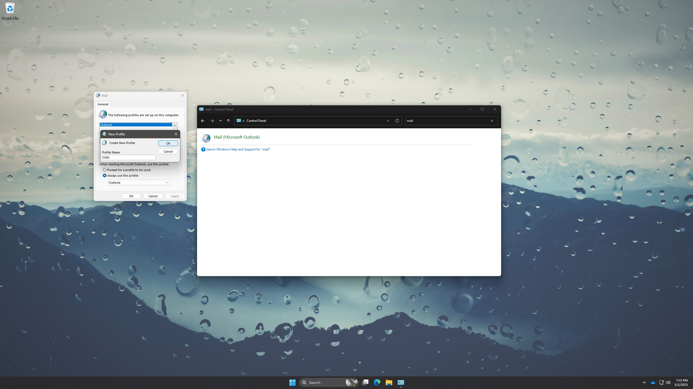
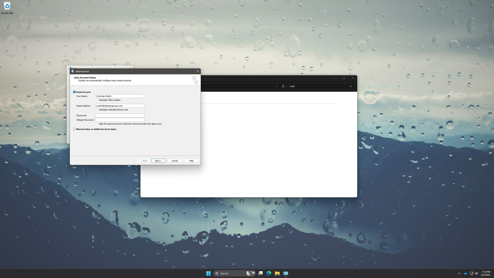
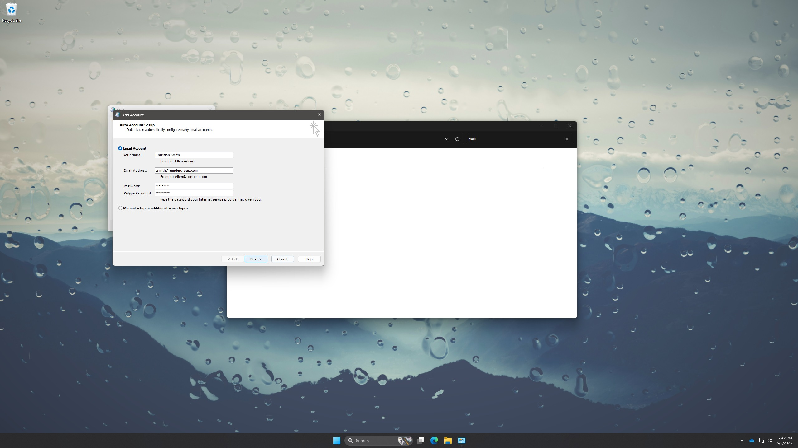
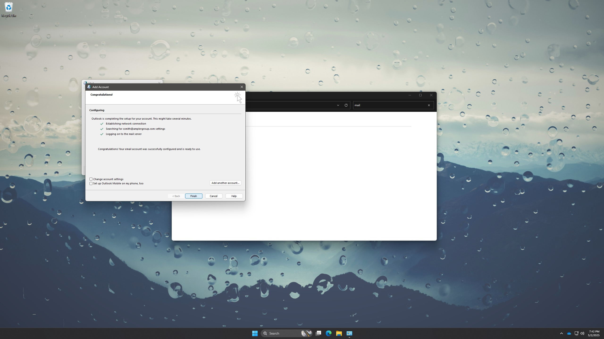

-
1Search and go to Control Panel.

-
2Click "Mail (Microsoft Outlook)"

-
3Click "Show Profiles..."

-
4Click "Add..."

-
5Input Profile Name.

-
6Click "OK"

-
7Enter name, email address and password.

-
8Click "Next >"

-
9Click "Finish"
